This paper introduces Knowledge Graph based Massively Multi-task Model-based Policy Optimization (KG-M3PO), a framework for multi-task robotic manipulation in partially observable settings that unifies perception, knowledge, and policy. The method augments egocentric vision with an online 3D scene graph that grounds open-vocabulary detections into a metric, relational representation. A dynamic-relation mechanism updates spatial, containment, and affordance edges at every step, and a graph neural encoder is trained end-to-end through the RL objective so that relational features are shaped directly by control performance. Multiple observation modalities, including visual, proprioceptive, linguistic, and graph-based inputs, are encoded into a shared latent space for control.
Experiments on manipulation tasks with occlusions, distractors, and layout shifts demonstrate consistent gains over strong baselines: the knowledge-conditioned agent achieves higher success rates, improved sample efficiency, and stronger generalization to novel objects and unseen scene configurations. These results support structured, continuously maintained world knowledge as a useful inductive bias for scalable, generalizable manipulation under partial observability.
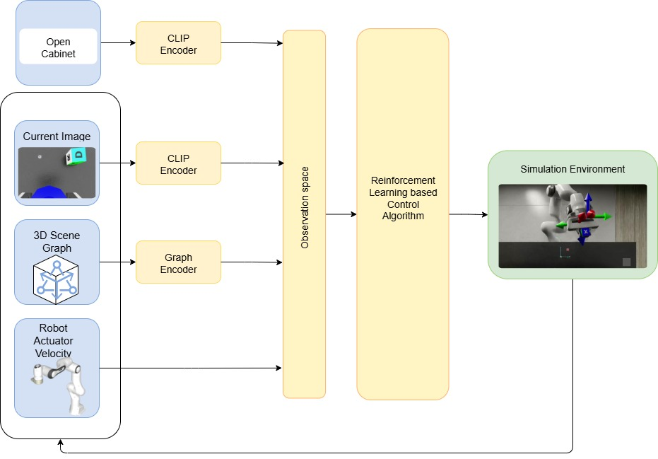
KG-M3PO fuses language goals, egocentric images, 3D scene graphs, and proprioception into a shared policy state. The graph encoder is trained directly through the reinforcement learning objective.
The knowledge graph is built from robot sensory data using BBQ-style open-vocabulary 3D scene graph generation, then refreshed online as objects move and relations change.
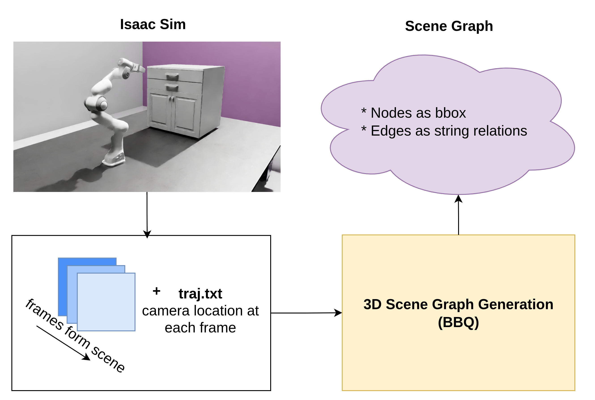
Scene graph generation pipeline
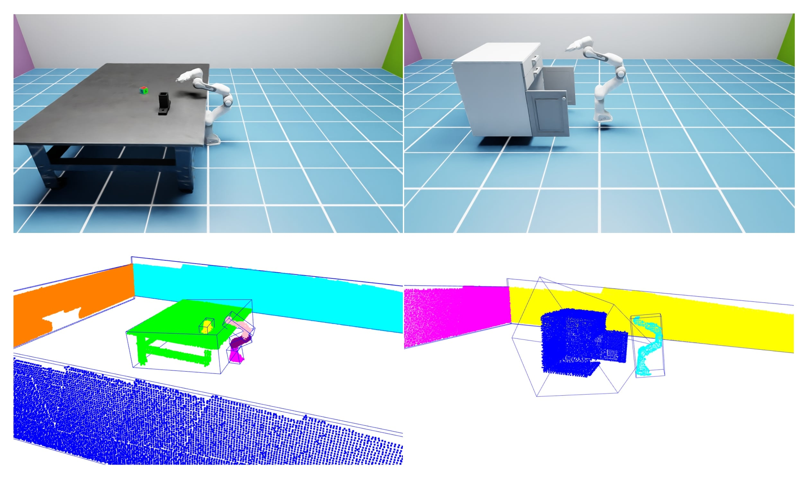
Example BBQ output
The benchmark covers Pick-Cube, Pick-Place, and Open-Cabinet tasks in fully observable scenes, plus partially observable UR5 tasks with hidden targets and movable occluders.
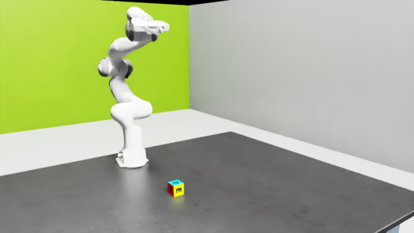
Pick-Cube
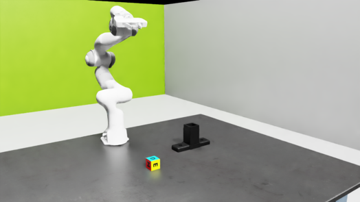
Pick-Place
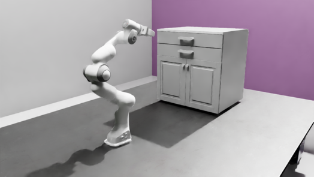
Open-Cabinet
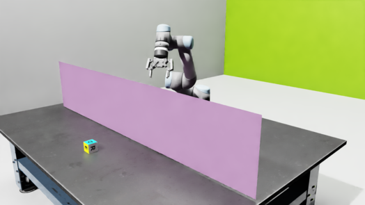
PO Pick
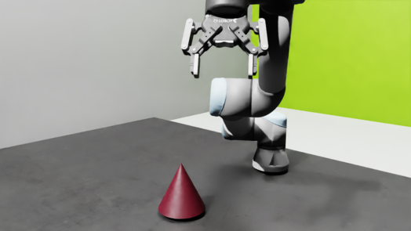
PO Pick-Place Start
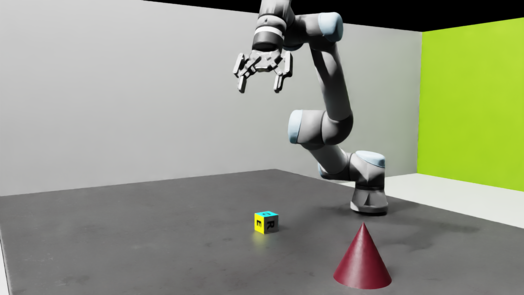
PO Pick-Place After Move
Across Pick, Pick-Place, and Open-Cabinet, adding the knowledge graph improves sample efficiency and final normalized score over camera-only observations.
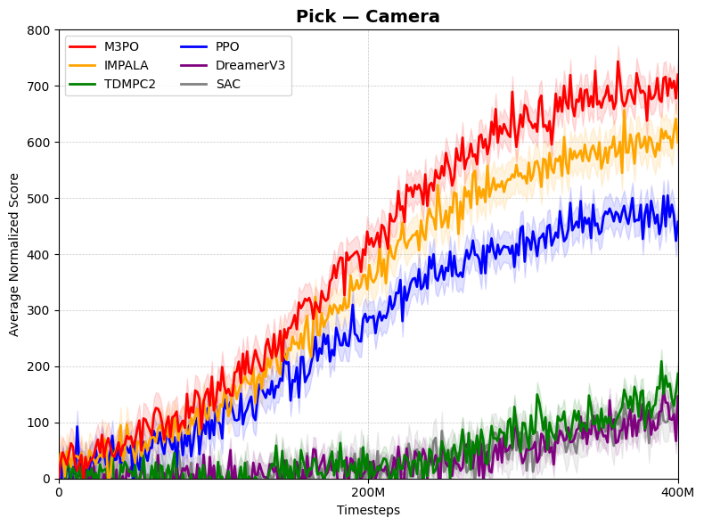
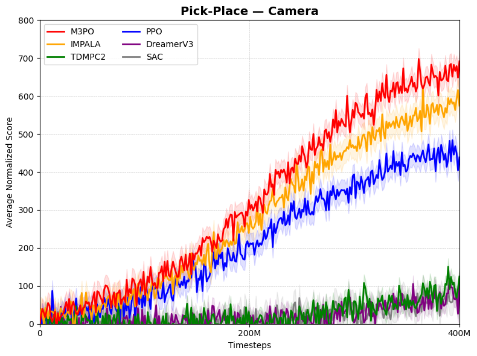
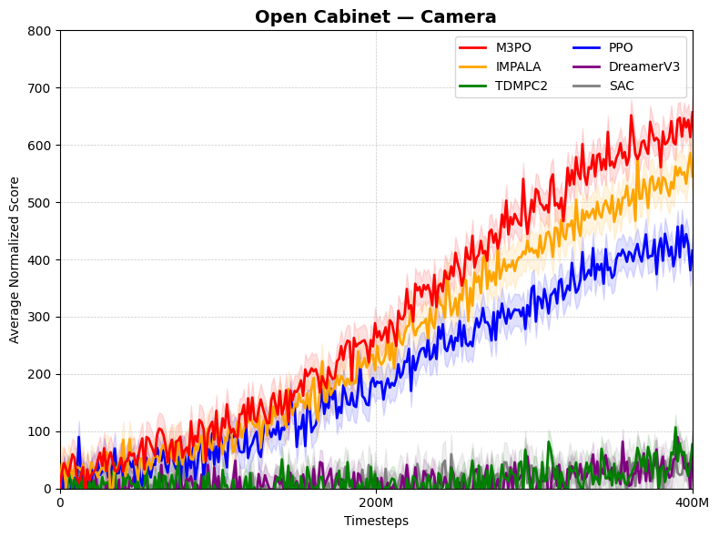
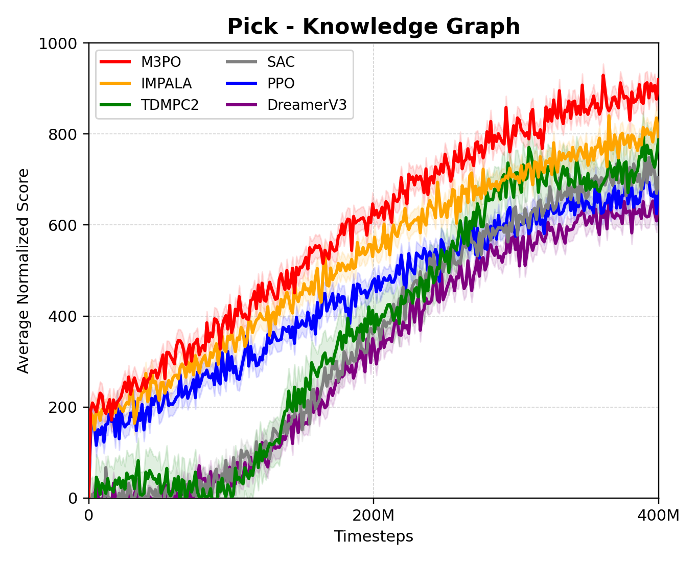
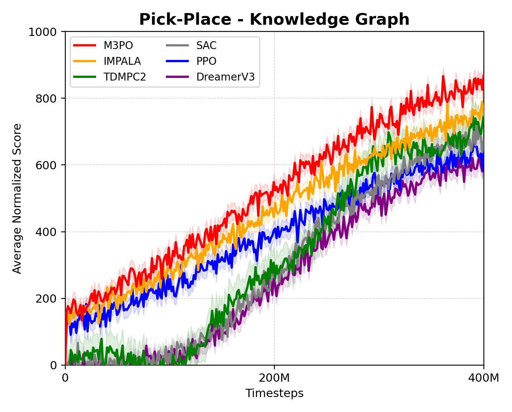
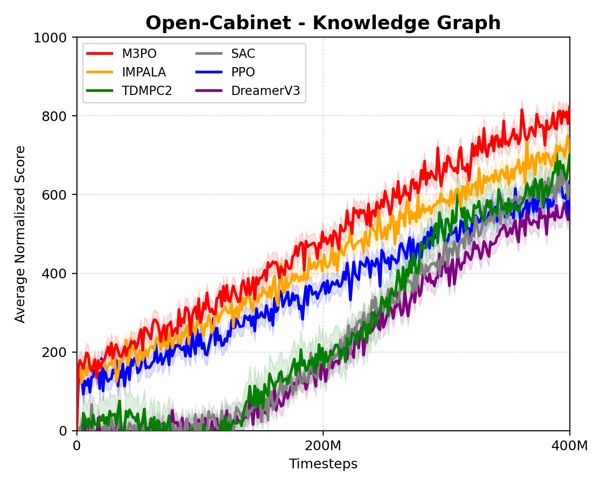
A single camera-only policy is trained across tasks to select the strongest multi-task baseline before adding structured knowledge in partially observable settings.
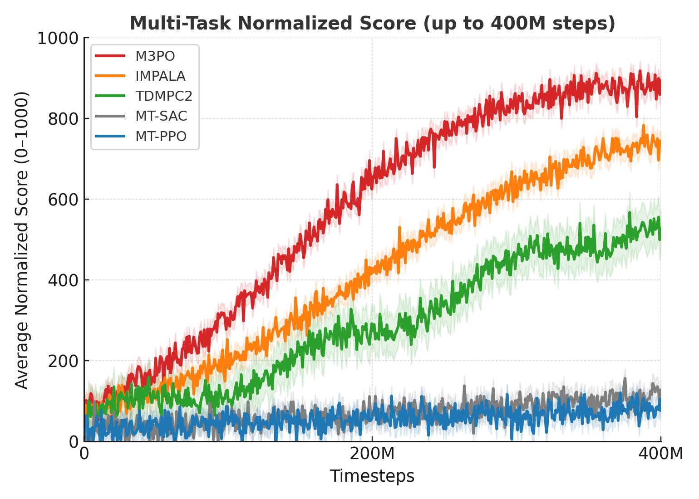
In occluded pick-place scenarios, camera + Knowledge Graph observations sharply improve learning over vision-only M3PO by preserving task-relevant object and relation state.
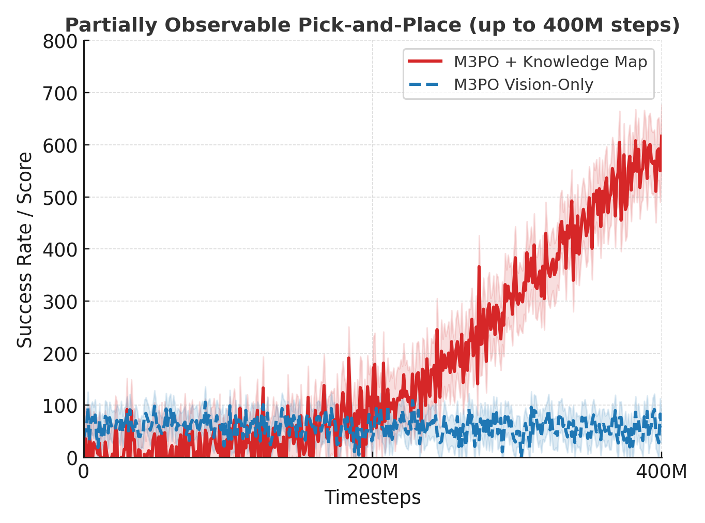
@misc{narendra2026kgm3po,
title={Knowledge-Guided Manipulation Using Multi-Task Reinforcement Learning},
author={Aditya Narendra and Mukhammadrizo Maribjonov and Dmitry Makarov and Dmitry Yudin and Aleksandr Panov},
year={2026},
eprint={2603.24083},
archivePrefix={arXiv},
note={ICRA 2026},
url={https://arxiv.org/abs/2603.24083}
}